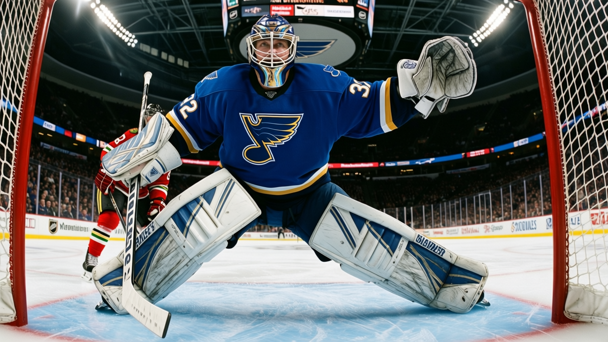

Notes from the West: St. Louis loses 5 straight, and 8 wins in 37 is the league's fewest
The Blues have the fewest wins in the league and are giving up 4.9 a night in their last 10
 Ray CallumSenior correspondent · Home Ice Network
Ray CallumSenior correspondent · Home Ice Network
 St. Louis Blues sit at 8 wins in 37 games. No club in the league has fewer. The Blues lost their fifth in a row on Saturday night, a 5-4 overtime loss in Philadelphia, and the damage across the last two weeks is what makes it worse.
St. Louis Blues sit at 8 wins in 37 games. No club in the league has fewer. The Blues lost their fifth in a row on Saturday night, a 5-4 overtime loss in Philadelphia, and the damage across the last two weeks is what makes it worse.
In their last 10, the Blues have been outscored 49 to 34, which works out to 4.9 goals against per game. Only the Sabres give up more per night across the season, and Buffalo's last 10 shows 3.9 against.
 Brent Johnson79 has started 28 of 37 games, a 76 percent share. He has been the Blues' only reliable option all season. The depth behind him is thin:
Brent Johnson79 has started 28 of 37 games, a 76 percent share. He has been the Blues' only reliable option all season. The depth behind him is thin:  Chris Osgood78 carries a 35 percent share in 13 starts, and neither of the other two goalies has appeared in more than 3 games.
Chris Osgood78 carries a 35 percent share in 13 starts, and neither of the other two goalies has appeared in more than 3 games.
The Blues' 121 goals for is not the problem. They score enough. They cannot stop anyone. The 165 goals against is tied with Pittsburgh for the most in the league. At home they are 5-11. On the road they are 8-13.
 Jamal Mayers69, who carries an elbow injury with a return targeted for Jan 12, had been one of the few players generating energy on the penalty kill. With him out, the Blues have one fewer body to put in the shooting lane.
Jamal Mayers69, who carries an elbow injury with a return targeted for Jan 12, had been one of the few players generating energy on the penalty kill. With him out, the Blues have one fewer body to put in the shooting lane.
 Colorado Avalanche visits Jan 4, then
Colorado Avalanche visits Jan 4, then  Edmonton Oilers on Jan 6. The Avalanche have the league's best road record at 14-3, and the Oilers are 12-8 away from Edmonton.
Edmonton Oilers on Jan 6. The Avalanche have the league's best road record at 14-3, and the Oilers are 12-8 away from Edmonton.
St. Louis is 29 points in 37 games, four wins behind the Wild, who have 12 in 38 and sit on the bubble.